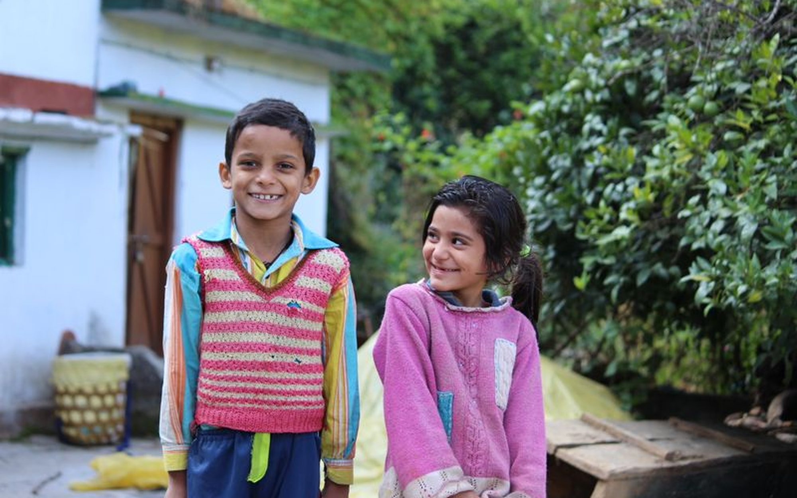
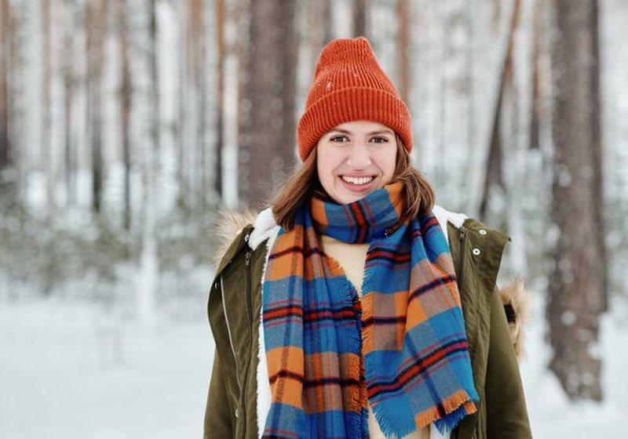

Tenue de fête enfant : quelle marque pour Noël et les anniversaires sans se ruiner ?
Robes, chemises et chaussures vernies chez 7 marques, du panier à 45 € au panier à 180 € en prix catalogue.

Bébé, fille, garçon, rentrée des classes. Nous comparons les grilles de tailles officielles, les prix catalogue et les avis clients avant de classer les marques.

Kiabi, Zara Kids, H&M, Vertbaudet, Okaïdi, Petit Bateau, Primark. Prix relevés en magasin, tailles mesurées sur 386 pièces, tenue après cinq lavages. Une marque sort nettement du lot sur le rapport qualité-prix.




Robes, chemises et chaussures vernies chez 7 marques, du panier à 45 € au panier à 180 € en prix catalogue.

Le genou qui troue, c'est le premier motif de rachat. Nous avons dépouillé les avis clients pièce par pièce.
Trois enfants, un panier complet par marque, prix catalogue relevés hors soldes.
Grammage annoncé, déperlance et prix, du modèle à 25 € au modèle à 120 €.
Rétrécissement, boutons pression et douceur du coton d'après 900 avis clients.
Un 6 ans qui va du 5 au 7 ans selon la marque : le tableau complet des écarts.
Note globale sur 10 sur le seul univers enfant. Les critères prix et tailles pèsent davantage que sur l'adulte : un enfant change de taille deux fois par an.
Voir la méthode de notation


Comparez deux marques enfant sur nos cinq critères en un clic.
Sur nos relevés 2026, Kiabi obtient la meilleure note globale de l'univers enfant (8,4/10) grâce aux prix les plus bas du panel et à des tailles fidèles. H&M suit sur le bébé, Zara Kids sur le style. Le détail est dans notre comparatif de 14 marques.
Sur 14 marques mesurées, l'écart entre la taille annoncée et la taille réelle va de moins 2 cm à plus 4 cm sur un 6 ans. Kiabi et Vertbaudet taillent le plus juste, Zara Kids taille petit, Primark taille grand.
Nous lavons chaque pièce cinq fois à 40 °C et mesurons le rétrécissement et la tenue des couleurs. Petit Bateau et Decathlon sont les plus stables, les imprimés Primark et Shein sont les plus fragiles.
Cinq critères sur 10 : prix, qualité, fidélité des tailles, livraison et note globale pondérée. Les prix viennent des sites officiels, les écarts de taille des grilles publiées par les marques et la tenue au lavage des avis clients. Aucune marque ne finance nos comparatifs.
Pour un panier complet à moins de 100 € par enfant, Kiabi et Primark sont les deux options les plus économiques de notre panel, Kiabi gardant l'avantage sur la tenue au lavage.
Un email par semaine : le classement du mois, les nouveaux comparatifs et les vraies baisses de prix relevées en magasin.
Pas de publicité, désinscription en un clic.